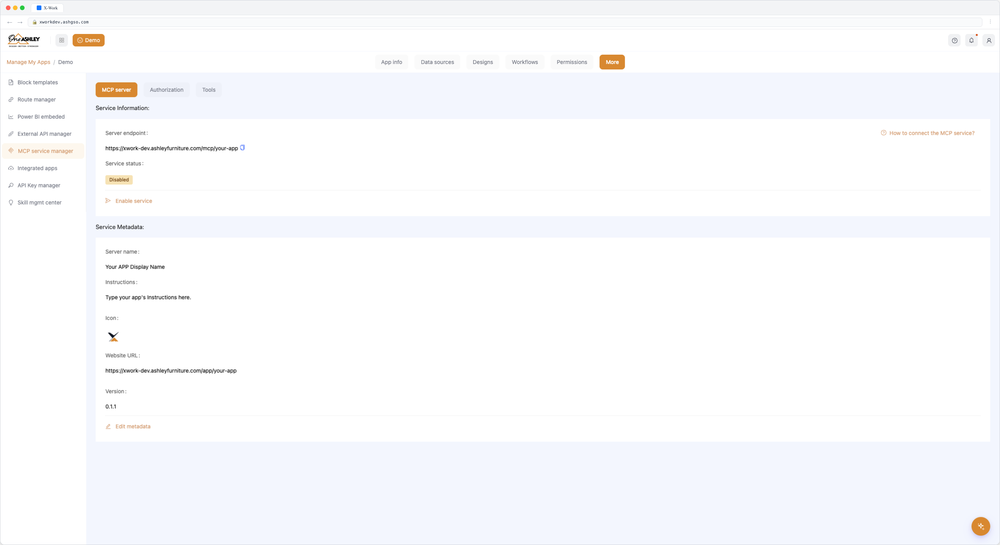
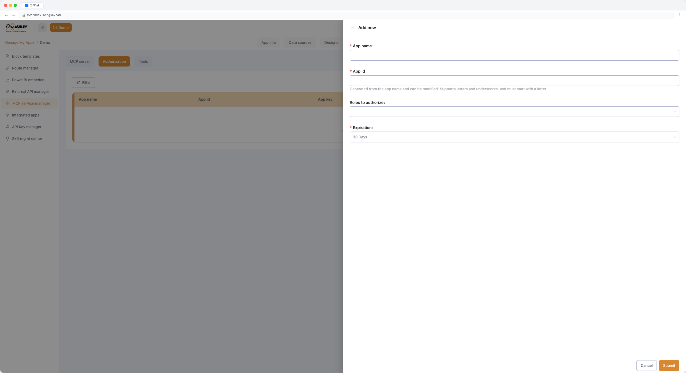
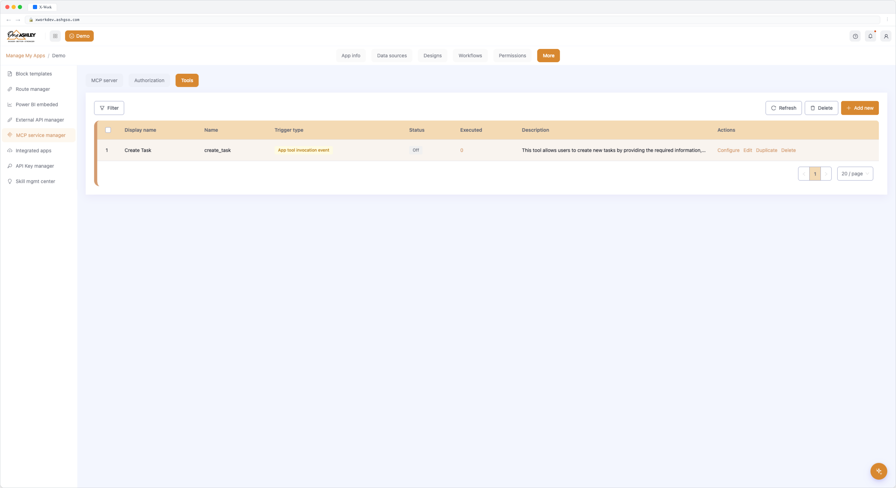

X-Work MCP Service lets you expose any X-Work application as an MCP (Model Context Protocol) server — through a no-code visual interface. AI agents (Claude, Coze, Dify, n8n, and others) can then call your X-Work business logic as MCP Tools, Prompts, and Resources, with full authentication and role-based access control.
1. Open the target X-Work application.
2. Navigate to MCP Service Manager → MCP Server.
3. Under Service Information, you will see:
Disabled.4. Click Enable service. Confirm in the dialog. The service status changes to Enabled.
To disable: click Disable service and confirm. All connected MCP clients will lose access immediately.

Click How to connect to the MCP service? to open the connection guide drawer. It provides:
{
"mcpServers": {
"{Server name}": {
"url": "https://xworkdev.ashgso.com/mcp/{app}",
"headers": {
"x-app-authorization": "YOUR APP KEY"
}
}
}
}Replace YOUR APP KEY with your Bearer token (see Step 2).
X-Work MCP supports two authentication modes. Choose one or both.
Best for: machine-to-machine integrations (agents, automation platforms).
1. Go to MCP Server → Authorization → App bearer authentication.
2. Click Add new.
3. Fill in:
| Field | Notes |
|---|---|
| App name | Human-readable name for this client |
| App id | Auto-filled from App name; letters and underscores only, must start with a letter |
| Roles to authorize | Select which X-Work roles this app inherits permissions from |
| Expiration | Default: 30 days. Options: 7 / 30 / 90 days, 1 year, never |
4. Click Submit. The Bearer token is generated — copy it immediately, it is shown only once.
Managing existing apps:

Best for: user-facing agents where permissions should reflect individual user roles.
1. Go to MCP Server → Authorization → User OAuth authentication.
2. Click Add Client.
3. Fill in:
| Field | Notes |
|---|---|
| Client name | Human-readable label |
| Client id | Auto-filled; letters and underscores, starts with a letter; must be unique within this app |
| Redirect url | The callback URL of your OAuth client; must be a valid URI |
4. Submit. A client secret is generated.
Managing clients:
Go to MCP Server → Service metadata to customize how this service appears to MCP clients.
| Field | Default | Editable |
|---|---|---|
| Server name | X-Work app name | No (v1) Fixed to the app name in v1; configurable in a future release. |
| Instructions | X-Work app description | Yes |
| Icon | X-Work app icon | Yes |
| Website url | X-Work app URL | Yes |
| Version | Empty | Yes |
Click Edit metadata to update any editable field.
MCP Service supports three object types:
MCP Tools expose executable actions to AI agents. Each tool is defined as a lightweight workflow canvas with an input schema and a response.
1. Go to MCP Server → Tools.
2. Click Add new.
| Field | Notes |
|---|---|
| Display name | Human-readable name shown to users |
| Name (identifier) | Auto-filled; unique within this app's tools; letters and underscores only |
| Trigger type | App tool invocation event (machine callers) or User tool invocation event (user-authorized callers) |
| Execution mode | Fixed: Synchronously |
| Description | Optional but recommended — helps the LLM understand when to call this tool |
3. Click Submit. The tool canvas opens automatically.
The canvas has two components:
#### Trigger (Input Schema)
Define what inputs this tool accepts using the JSONSchema editor:
| Type | Description |
|---|---|
| string | Text value |
| number | Numeric value |
| integer | Integer value |
| boolean | True/false value |
| array | List of values |
| object | Nested key-value structure |
| single-select | One choice from a predefined list |
| multi-select | Multiple choices from a predefined list |
For each property, set: Property name, Required (checkbox), Type, Description.
You can also click Import JSON to paste a raw JSON object and have it converted to the schema automatically.
Once a tool version has execution records, the Trigger becomes read-only. Create a new version to edit.
#### MCP Tool Response
Define what this tool returns to the calling agent.
On success (isError = false):
The tool executed without business-level errors.
text) and a Text field where you can reference workflow variables.On failure (isError = true):
Returned when the tool logic encounters a business-level error (e.g., validation failure, resource not found). The MCP client receives isError: true in the response.
Before connecting a client, test the tool directly from the canvas:
This validates tool logic without involving MCP protocol or authentication layers.
| Action | Description |
|---|---|
| Configure | Open the tool canvas |
| Edit | Edit name, status, description, history auto-delete setting |
| Duplicate | Clone the tool with a new name and trigger type |
| Delete | Remove the tool after confirmation |

Access control is managed per role. Navigate to Permissions → Roles → [Role name] → MCP Access Control.
| Scope | Behavior |
|---|---|
| No access (default) | Role cannot see or call any tools |
| Full access | Role can access all tools |
| Partial access | Shows a tool list — check only the tools this role may access |
Owner and Manager roles default to Full access and cannot be restricted.
Same structure as Tool Access, applied to Prompts.
Go to MCP Server → Logs to review all MCP client requests and responses.
Log list fields:
| Field | Description |
|---|---|
| Request time | When the client made the request |
| Invoker type | App or User |
| Invoker id | App id or User id |
| Method | MCP method called (e.g., tools/call) |
| Target name | The tool, prompt, or resource that was called |
| Status | Response status |
Click View on any log entry to see full detail: basic info, request payload, response content, and (on internal errors) the failure reason.
After completing Steps 1–5, add the following to your Claude Desktop config:
{
"mcpServers": {
"my-xwork-app": {
"url": "https://xworkdev.ashgso.com/mcp/my-app",
"headers": {
"x-app-authorization": "YOUR_BEARER_TOKEN"
}
}
}
}Claude will discover all enabled tools and can call them in conversation.
| Error type | Channel |
|---|---|
| Invalid input parameters | JSON-RPC protocol layer error |
| Tool name not found | JSON-RPC protocol layer error |
| Tool execution failed | JSON-RPC protocol layer error |
| Business-level error | isError: true in the tool response content |
| Permission denied | JSON-RPC protocol layer error |